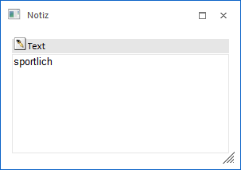
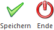

Wenn in den Tabellen der Programme "Stückliste" (Register "Stamm") oder "Stückliste bearbeiten" ein Doppelklick auf die Spalte "Text" bzw. "Notiz" durchgeführt wird, so öffnet sich das Fenster "Notiz". In diesem können zusätzliche Bemerkung oder Hinweise zu dieser Komponente / Tätigkeit erfasst werden.

Dieser Text kann auch mit Formatierungen versehen werden.
Buttons

Ø Speichern
Durch Anwahl des Buttons "Speichern" bzw. der Taste F5 werden die Änderungen übernommen. Um den Text endgültig zu speichern, muss die Speicherung auch im Ausgangsfenster vollzogen werden.
Ø Ende
Mit Hilfe des Buttons "Ende" bzw. der Taste ESC wird das Fenster geschlossen und alle nicht gespeicherten Änderungen verworfen.